Literatur - Bücher
Zurück zur Übersicht
Fehlt eine Publikation in dieser Liste oder möchten Sie eine Rezension schreiben? Dann wenden Sie
sich bitte an uns per mail.
Literaturhinweise zu den OpenOffice.org Vorversionen 1.0.x bzw. 1.1.x finden Sie
hier.
Bomots - OpenOffice Writer 2.0
| Autor: |
Stephan Lamprecht |
|
| Preis: |
€ 12,80 |
| Erscheinungsdatum: |
August 2005 |
| Umfang: |
192 Seiten |
| ISBN: |
2-915925-14-3 |
| Kurzbeschreibung |
Der OpenOffice Writer ist ein mächtiges Werkzeug, mit dem Sie Texte aller Art schreiben können: Briefe und
Berichte, aber auch Diplomarbeiten, Bücher und Prospekte. Auch das vorliegende Buch ist mit dem Programm
geschrieben worden.
Der Autor macht Sie mit allen wesentlichen Funktionen der kostenlosen Word-Alternative vertraut. Nach der
Lektüre werden Sie selbst komplexe Dokumente erstellen können. Das Buch führt Sie durch alle wichtigen Aspekte
der Dokumentenerstellung. Sie lernen, wie Sie Dokumente professionell gestalten, wie Sie die
Automatisierungsfunktionen nutzen, wie Sie Verzeichnisse erstellen und wie Sie Seriendokumente produzieren.
Auch die Teamarbeit kommt nicht zu kurz. |
Bei bomots bestellen |
C & L - OpenOffice.org 2 / StarOffice 8
| Autor: |
Rosa Riebl, Rene Gäbler |
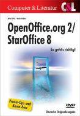 |
| Preis: |
€ 32,95 |
| Erscheinungsdatum: |
Februar 2006 |
| Umfang: |
623 Seiten, mit DVD |
| ISBN: |
3-936546-32-0 |
| Kurzbeschreibung |
Viele Tips aus der Praxis zum Aufbau von Dokumenten und den Umgang mit den Funktionen der Software. Das Buch
hört nicht dort auf, wo es kompliziert wird oder sich die Hilfe ausschweigt.
Unter anderem geht es um Techniken wie Serienbriefe mit mehr als nur "Herrn" und "Frau" in der Anrede, das
richtige Zuweisen neuer Seitennummern mit korrekten Querverweisen und den Aufbau einer eigenen Literaturdatenbank.
Funktionen und Berechnungen in Calc werden ausführlich gewürdigt, Themen wie die Definition eigener Datentypen
verständlich dargestellt. In Base werden Datenbanken aufgebaut und importiert, Masken dienen als Schnittstelle
zum Anwender. Auch in der Beschreibung der anderen Module steht immer die Alltagspraxis im Vordergrund. |
Bei C & L bestellen |
C & L - Writer-Tuning für OpenOffice.org 2/StarOffice 8
| Autor: |
Franz Böhm |
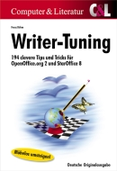 |
| Preis: |
€ 24,90 |
| Erscheinungsdatum: |
Juni 2005 |
| Umfang: |
383 Seiten |
| ISBN: |
3-936546-40-1 |
| Kurzbeschreibung |
Dieses Buch gibt wertvolle Lösungen, Hinweise und Anregungen für
- den Umstieg von Microsoft Word
- den generellen Umgang mit Writer
- Vorlagen und AutoTexte
- Verzeichnisse und Beschriftungen
- Funktionen und Feldbefehle
- Tabellen, Spalten und Bereiche
- Rechtschreibung und Silbentrennung
- Formatieren und Gestalten
Selbst erfahrene Anwender werden bei der Lektüre viele Aha-Erlebnisse haben!
|
Bei C & L bestellen |
C & L - OpenOffice.org Calc Formeln und Funktionen
| Autor: |
Franz Böhm |
|
| Preis: |
€ 34,90 |
| Erscheinungsdatum: |
Juni 2006 |
| Umfang: |
384 Seiten |
| ISBN: |
3-936546-42-8 |
| Kurzbeschreibung |
OpenOffice.org Calc besitzt weit über dreihundert eingebaute Funktionen, die dem Anwender einen großen Teil
an Rechenarbeit abnehmen. Der Umgang mit diesen vorgefertigten Programmen erschließt sich aber nicht von selbst,
außerdem ist die Hilfefunktion oft unvollständig oder unverständlich.
Dieses Buch ist ein unentbehrliches Werkzeug für alle User von Calc, die keine Lust und Zeit haben, sich
stundenlang durch kryptische Parameterlisten zu wühlen und zu rätseln, sondern schnell und einfach zu Ergebnissen
kommen wollen.
|
Bei C & L bestellen |
C & L - OpenOffice.org Basic
| Autor: |
Redaktion Toolbox (Hrsg.) |
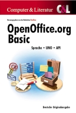 |
| Preis: |
€ 49,90 |
| Erscheinungsdatum: |
Juni 2005 |
| Umfang: |
878 Seiten |
| ISBN: |
3-936546-14-2 |
| Kurzbeschreibung |
Alles Wissenswerte über die Strukturen und Funktionen der Sprache OpenOffice.org Basic und das Design eigener
Eingabeelemente mit dem Dialog-Editor. Die Autoren, erfahrene Software-Entwickler, erläutern, was hinter dem
Komponentenmodell UNO steckt und zeigen, wie es die internen Funktionen des Pakets steuert und dabei auf das API
zugreift. Nicht allein die Arbeit mit den Hauptmodulen Calc und Writer wird ausführlich beschrieben, auch der
Datenbankintegration mit dem API ist ein eigenes Kapitel gewidmet.
Das Buch dient auch als Nachschlagewerk, denn die wesentlichen Module des API wurden sorgfältig ins Deutsche
übersetzt und mit vielen Querverweisen versehen abgedruckt. |
Bei C & L bestellen |
Galileo Press - OpenOffice.org 2.3 - Einstieg und Umstieg
| Autor: |
Thomas Krumbein |
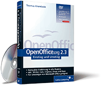 |
| Preis: |
€ 29,90 |
| Erscheinungsdatum: |
Oktober 2007 |
| Umfang: |
635 Seiten, mit DVD |
| ISBN: |
978-3-8362-1114-7 |
| Kurzbeschreibung |
Dieses Buch behandelt alle Module von OpenOffice.org. Neben der Beschreibung der wichtigsten Funktionen
des Programms erfahren Sie, wie ein Umstieg ohne Daten- und Makroverluste reibungslos gelingt. Dieses Buch
ist auch für Einsteiger bestens geeignet.
Bei Bestellung über den unten angegebenen Link erhält der Verein OpenOffice.org Deutschland e.V. von
Galileo Press eine Spende in Höhe von 3 € je Exemplar. |
Bei Galileo Press bestellen |
Galileo Press - Textverarbeitung mit OpenOffice.org 2.3
| Autorin: |
Jacqueline Rahemipour |
|
| Preis: |
€ 34,90 |
| Erscheinungsdatum: |
Oktober 2007 |
| Umfang: |
598 Seiten, mit DVD |
| ISBN: |
978-3-8362-1115-4 |
| Kurzbeschreibung |
Das Buch ermöglicht einen tiefen Einblick in den Funktionsumfang von OpenOffice.org Writer und beschränkt
sich dabei keineswegs auf die Erläuterung der Grundfunktionalitäten, sondern zeigt zudem auf, wie OpenOffice.org
für die professionelle Textverarbeitung genutzt werden kann.
Das Spektrum reicht vom Umgang mit Vorlagen bis hin zur Erstellung von Serienbriefen. Der Hauptaugenmerk wird
auf "Umsteiger" gelegt, die bereits grundlegende Erfahrungen mit einer anderen Textverarbeitung haben, unabhängig
davon, ob sie OpenOffice.org im privaten oder geschäftlichen Bereich einsetzen.
Bei Bestellung über den unten angegebenen Link erhält der Verein OpenOffice.org Deutschland e.V. von
Galileo Press eine Spende in Höhe von 3 € je Exemplar. |
Bei Galileo Press bestellen |
Galileo Press - Tabellenkalkulation mit OpenOffice.org 2.3
| Autor: |
Jörg Schmidt |
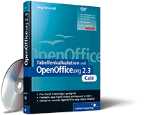 |
| Preis: |
€ 34,90 |
| Erscheinungsdatum: |
Oktober 2007 |
| Umfang: |
537 Seiten, mit DVD |
| ISBN: |
978-3-8362-1113-0 |
| Kurzbeschreibung |
Das Themenspektrum des Buches reicht von der Vermittlung grundsätzlicher Fertigkeiten im Umgang mit Calc bis
hin zu umfassenden Anwendungsbeispielen. Einer der Schwerpunkte ist die Thematik "Formeln und Funktionen", wobei
besonders auf das Erstellen von Formeln zu komplexen Sachverhalten eingegangen wird.
Der Autor ist bemüht Fragen aufzugreifen, welche ihm aus seiner Forumstätigkeit als Problemfelder bekannt sind.
Nicht zuletzt wird auch Wert auf die Vermittlung von Informationen für bisherige Anwender von MS Excel gelegt.
Bei Bestellung über den unten angegebenen Link erhält der Verein OpenOffice.org Deutschland e.V. von
Galileo Press eine Spende in Höhe von 3 € je Exemplar. |
Bei Galileo Press bestellen |
Galileo Press - Präsentationen mit OpenOffice.org 2.0
| Autoren: |
Stefan Koehler, Andreas Mantke |
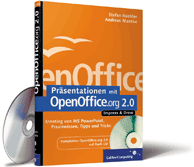 |
| Preis: |
€ 29,90 |
| Erscheinungsdatum: |
November 2005 |
| Umfang: |
383 Seiten, mit CD |
| ISBN: |
3-89842-660-2 |
| Kurzbeschreibung |
Eine gute Präsentation zeichnet sich dadurch aus, dass sie einen Inhalt in angemessener Form klar und verständlich
transportiert. OpenOffice.org bietet für diese Aufgabe mit dem Modul Impress ein mächtiges Werkzeug, welches in der
Version 2.0 nochmals grundlegende Verbesserungen erfährt. Zudem stellt das Modul Draw alle Funktionalitäten bereit,
um selber Hintergründe, Organigramme und andere Grafiken zu erstellen und zu bearbeiten.
>Das Buch soll Ein- und Umsteiger mit allen relevanten Themen bekannt machen und in vielen Praxis bezogenen Beispielen
die Vielfalt der Module Impress und Draw aufzeigen.
Bei Bestellung über den unten angegebenen Link erhält der Verein OpenOffice.org Deutschland e.V. von
Galileo Press eine Spende in Höhe von 3 € je Exemplar. |
Bei Galileo Press bestellen |
Galileo Press - Makros in OpenOffice.org
| Autor: |
Thomas Krumbein |
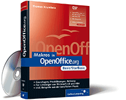 |
| Preis: |
€ 44,90 |
| Erscheinungsdatum: |
Oktober 2007 |
| Umfang: |
789 Seiten, mit DVD |
| ISBN: |
978-3-8362-1111-6 |
| Kurzbeschreibung |
Das Buch gibt praktische Hinweise zum Einsatz der mit zum Lieferumfang von OpenOffice.org gehörenden Makro-Sprache
"OpenOffice.org-Basic". Neben einer allgemeinen Einführung in die Sprache "Basic" an sich werden detailliert das
Objektmodell und die API und damit die Möglichkeiten der Automatisierung und der Programmierung an Hand vieler
praktischer Beispiele dargestellt.
Bei Bestellung über den unten angegebenen Link erhält der Verein OpenOffice.org Deutschland e.V. von
Galileo Press eine Spende in Höhe von 3 € je Exemplar. |
Bei Galileo Press bestellen |
Galileo Press - Datenbanken mit OpenOffice.org 2.3 Base
| Autor: |
Thomas Krumbein |
|
| Preis: |
€ 39,90 |
| Erscheinungsdatum: |
Oktober 2007 |
| Umfang: |
547 Seiten, mit DVD |
| ISBN: |
978-3-8362-1112-3 |
| Kurzbeschreibung |
Das Buch gibt praktische Hinweise zum Einsatz des zum Lieferumfang von OpenOffice.org oder StarOffice gehörenden
Base-Moduls sowie der mitgelieferten HSQLDB Datenbank. Neben einer allgemeinen Einführung in die Datenbanktechnik
an sich werden detailliert die Möglichkeiten des Base-Moduls mit der Zusammenstellung von Formularen und Abfragen
sowie der Möglichkeit, Datenbanken direkt in der Tabellenansicht zu bearbeiten dargestellt. Ein eigenes Kapitel
über die Datenbank HSQLDB sowie über die SQL-Sprache runden das Gesamtbild ab.
Bei Bestellung über den unten angegebenen Link erhält der Verein OpenOffice.org Deutschland e.V. von
Galileo Press eine Spende in Höhe von 3 € je Exemplar. |
Bei Galileo Press bestellen |
Galileo Press - Wissenschaftliche Arbeiten mit OpenOffice.org 2.0
| Autor: |
Kai Surendorf |
|
| Preis: |
€ 19,90 |
| Erscheinungsdatum: |
November 2005 |
| Umfang: |
319 Seiten, mit CD |
| ISBN: |
3-89842-615-7 |
| Kurzbeschreibung |
Das freie Office-Paket OpenOffice.org findet immer mehr Anwender, auch im akademischen und studentischen Bereich.
Von der Texteingabe bis zur Ausgabe des normgerecht formatierten Dokuments erklärt der Autor alle Schritte anhand
der Software OpenOffice.org. Dabei werden alle entscheidenden Schritte - wie z. B. die Erstellung einer
Bibliographie mit der Literaturdatenbank oder die Erstellung kleiner Makros - berücksichtigt. |
Bei Galileo Press bestellen |
Hanser - OpenOffice.org 2.0
| Autor: |
Ramin Assisi |
|
| Preis: |
€ 29,90 |
| Erscheinungsdatum: |
Dezember 2005 |
| Umfang: |
386 Seiten, mit CD |
| ISBN: |
3-446-40433-3 |
| Kurzbeschreibung |
Ein Office-Paket muss nicht mehr teuer sein! Wer sich für das frei verfügbare OpenOffice.org entscheidet, wird
schnell feststellen, dass es sehr leistungsfähig ist und durchaus mit Microsoft Office mithält. Und wer dann noch
Firefox und Thunderbird mit einsetzt, hat eine komplette professionelle Office Suite für sein Büro. Wie Sie mit
dieser Office-Suite rasch produktiv arbeiten können, zeigt dieses Buch.
Vorgestellt werden die Programme:
- Writer für die Textverarbeitung
- Calc für die Tabellenkalkulation
- Impress für die Präsentation
- Draw als Zeichenprogramm
- Base, die Datenbank
- Firefox als Browser
- Thunderbird als E-Mail-Client
|
Bei Hanser bestellen |
Hanser - OpenOffice-Programmierung
| Autor: |
René Martin |
|
| Preis: |
€ 29,90 |
| Erscheinungsdatum: |
September 2005 |
| Umfang: |
510 Seiten |
| ISBN: |
3-446-40450-3 |
| Kurzbeschreibung |
Mit der wachsenden Verbreitung von OpenOffice steigt auch die Zahl der Anwender, die OpenOffice individuell anpassen
und automatisieren wollen, um damit effizient arbeiten zu können.
Das Buch erläutert, wie sich mit Hilfe der Basic-IDE in OpenOffice wiederkehrende Abläufe und Prozesse am Arbeitsplatz
automatisieren lassen. Dazu beschäftigt sich der Autor mit der Theorie und Philosophie der Basic-IDE, beschreibt den Sprachkern,
stellt das Application Programming Interface (API) vor, erläutert den Zugriff auf Dateien sowie die Druckersteuerung und
behandelt die Programmierung in Calc, Writer, Draw, Impress und Base. |
Bei Hanser bestellen |
Markt & Technik - OpenOffice.org 2.0
| Autor: |
Michael Kolberg |
|
| Preis: |
€ 25,95 |
| Erscheinungsdatum: |
Dezember 2005 |
| Umfang: |
648 Seiten |
| ISBN: |
3-8272-6976-8 |
| Kurzbeschreibung |
Das umfassende Handbuch für die Office-Alternative! Alles, was Sie über und zur neuen Version 2.0 von
OpenOffice.org wissen müssen, finden Sie hier. Alle Module - Writer, Calc, Base, Impress, Draw, Math - werden
einzeln erläutert und die jeweiligen Funktionen und Arbeitsweisen von Textverarbeitung, Tabellenkalkulation,
Datenbank, Formelgenerator, Präsentations- und Zeichen-Programm an leicht nachvollziehbaren Beispielen erklärt.
Ausführlich zeigt der Autor auch alle Neuerungen und Verbesserungen der aktuellen Version 2.0 der beliebten
und kostenlosen Bürosoftware. Mit der Buch-CD können Sie übrigens auch gleich loslegen. Da ist das komplette
OpenOffice.org-Paket (Version 2.0) mit deutscher Rechtschreibprüfung und Vorlagensammlung draufgepackt. |
Bei Markt & Technik bestellen |
Markt & Technik - Easy OpenOffice.org 2
| Autor: |
Günter Born |
|
| Preis: |
€ 19,95 |
| Erscheinungsdatum: |
voraussichtlich April 2006 |
| Umfang: |
416 Seiten |
| ISBN: |
3-8272-4083-2 |
| Kurzbeschreibung |
Das leichtverständliche "Lernbuch" zur kostenlosen Software. In bekannter EASY-Qualität zeigt der Autor
alles, was man zum Schreiben, Arbeiten mit der Tabellenkalkulation und zum Präsentieren braucht. Außerdem
gibt es eine Einführung in das Zeichenprogramm Draw und in das Datenbankmodul Base. Hier fühlt sich jeder gut
aufgehoben: vom Privatanwender bis zu allen, die OpenOffice im Büro einsetzen. Das Buch wurde unter Windows
geschrieben, lässt sich aber auch von Lesern nutzen, die in einem Linux- oder Macintosh-Umfeld arbeiten
oder StarOffice 8 einsetzen. |
Bei Markt & Technik bestellen |
Millin - OpenOffice.org 2 / StarOffice 8
| Autor: |
Günter Born |
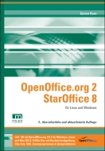 |
| Preis: |
€ 39,90 |
| Erscheinungsdatum: |
voraussichtlich März 2006 |
| Umfang: |
ca. 1000 Seiten, mit CD |
| ISBN: |
3-938626-04-6 |
| Kurzbeschreibung |
Als Alternative zu den etablierten Office-Paketen gewinnen die neuen Versionen OpenOffice.org 2 und StarOffice 8
immer weiter an Popularität. Denn mit diesen Produkten steht interessierten Anwendern unter Linux und Windows eine
extrem preiswerte und vor allem leistungsfähige komplette Office-Lösung zur Verfügung. Dieses Buch will dabei die
Lücke zwischen der Online-Hilfe, dem StarOffice-Handbuch, den Anleitungen im Internet und den Wunsch nach einem
"single source"-Nachschlagewerk schließen.
Das Buch richtet sich dabei an alle Anwender von OpenOffice.org/StarOffice, die in dem Paket mehr als ein billiger
Schreibmaschinenersatz sehen: - Es eignet sich für Leser, die einen leichten Einstieg suchen oder sich einen Überblick
über die verfügbaren Funktionen des Office-Pakets verschaffen möchten. Dies gilt auch für Umsteiger von Microsoft Office. |
Bei Millin bestellen |
O'Reilly - OpenOffice.org 2.0
| Autor: |
Tobias Berndt |
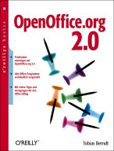 |
| Preis: |
€ 24,00 |
| Erscheinungsdatum: |
Oktober 2005 |
| Umfang: |
410 Seiten, mit CD |
| ISBN: |
3-89721-381-8 |
| Kurzbeschreibung |
OpenOffice.org ist eine voll funktionstüchtige Open Source-Alternative zu Microsofts Office-Paket - und noch
dazu kostenlos. Immer mehr Unternehmen und private Anwender entscheiden sich für den Umstieg. Das Buch dokumentiert
die praktische Arbeit mit Writer und Calc, mit dem vektororientierten Zeichenprogramm Draw, dem Präsentationsprogramm
Impress sowie dem neuen Datenbankmodul Base.
Im Mittelpunkt steht nicht die monotone Erläuterung der verschiedenen Menüs, sondern wie bestimmte Aufgaben des
Office-Alltags zu lösen bzw. Probleme zu vermeiden sind. Originelle Beispiele und der lockere Stil des Autors sorgen
dafür, dass Ihnen das Einarbeiten in OpenOffice.org Spaß macht. Sie kommen nicht nur mit den neuen Programmen
zurecht, sondern erfahren auch, wie Sie Ihre Produktivität im Office-Alltag steigern. |
Bei O'Reilly bestellen |
O'Reilly - OpenOffice.org Base 2.0
| Autor: |
Michael Mahrt |
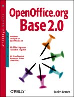 |
| Preis: |
€ 24,90 |
| Erscheinungsdatum: |
Februar 2006 |
| Umfang: |
320 Seiten |
| ISBN: |
3-89721-411-3 |
| Kurzbeschreibung |
In der Version 2.0 besitzt OpenOffice.org mit Base jetzt auch ein eigenständiges Datenbankmodul. Die verständliche
Einführung erklärt grundlegende Begriffen der Datenbankwelt angefangen bei Tabellen und Datentypen bis hin zu
Bezeichnungen wie Backend oder DBMS.
Im Mittelpunkt des Buches stehen die zentralen Datenbank-Funktionen wie Abfragen, Berichte, Formulare oder das Design
einer neuen Datenbank, die jeweils Schritt für Schritt anhand von Beispielen vorgestellt werden. Neben der Arbeit mit
den jeweiligen Base-Assistenten beschreibt das Buch auch, wie man eigenständig z.B. Abfragen erstellt oder Datenbanken
entwirft. Weitere Themen sind u.a. die Verabreitung von Calc- und Writer-Dateien, Ansichten oder serverbasierte
Datenquellen (MySQL, Adabas von StarOffice, abstrahierende Treiber wie JDBC). |
Bei O'Reilly bestellen |
pg Verlag - Wissenschaftliche Arbeiten: Schritt für Schritt zu Diplomarbeit und Dissertation mit
OpenOffice.org 2 Writer
| Autor: |
Gerald Fränkl |
|
| Preis: |
€ 14,40 |
| Erscheinungsdatum: |
Februar 2006 |
| Umfang: |
198 Seiten |
| ISBN: |
3-937624-20-1 |
| Kurzbeschreibung |
Wissenschaftliche Arbeiten: Schritt für Schritt zu Diplomarbeit und Dissertation mit Openoffice.org 2 Writer
So gelingen wissenschaftliche Arbeit schnell und professionell.
Dieses Buch erläutert Schritt für Schritt, wie man mit der Textverarbeitung Writer aus dem Office-Anwendungspaket
OpenOffice.org Version 2 Studienarbeiten, Diplomarbeiten, Doktorarbeiten/Dissertationen und auch Facharbeiten verfasst.
Zahlreiche Bildschirmfotos verdeutlichen jeden wesentlichen Schritt und ermöglichen Ihnen, jeden Schritt leicht
nachzuvollziehen. Das Buch gibt viele Zusatzinformationen und Tipps, z.B. zum wissenschaftlichen Arbeiten allgemein
sowie zu den Themen Schreibblocken, Arbeitsplatzgestaltung, Grafiken, Buchdruck uvm. |
Bei pg bestellen |
RRZN/Uni Hannover - StarOffice 8 & OpenOffice.org 2
| Autor: |
Günter Marxen |
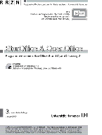 |
| Preis: |
€ 4,50 |
| Hinweis: |
Das Buch ist leider nicht auf dem freien Markt, sondern nur an etwa 130 deutschen Universitäten erhältlich.
|
| Erscheinungsdatum: |
Januar 2006 |
| Umfang: |
204 Seiten |
| Kurzbeschreibung |
Das Handbuch beschreibt praxisorientiert das Arbeiten mit der Textverarbeitung Writer, dem Formeleditor
Math und der Tabellenkalkulation Calc.
Besondere Berücksichtigung findet das Erstellen langer, wissenschaftlicher Texte wie z.B. Examensarbeiten
mit Nummerierungen, Verweisen, Literaturangaben, Fußnoten und Verzeichnissen. Das Einbetten, Formatieren und
Beschriften von Abbildungen wird ausführlich beschrieben.
Die Benutzung von Dokument- und Formatvorlagen wird detailliert mit praktischen Beispielen erläutert.
Berücksichtigt ist zudem die Serienbrieffunktion und der Druck von Etiketten. Für Calc wird die
Erstellung und Formatierung von Tabellen sowie das Eingeben von Formeln beschrieben. Abschließend
wird die Erstellung von Diagrammen erläutert.
|
Weitere Informationen zum Bezug |
Literatur - Schulungsunterlagen
Bildungsverlag Eins - Arbeitsbuch EDV-Grundlagen OpenOffice
| Autoren: |
Frank Braun, Christoph Rauber, Thomas Renner |
|
| Preis: |
€ 18,90 |
| Erscheinungsdatum: |
August 2007 |
| Umfang: |
260 Seiten |
| ISBN: |
978-3-427-34981-5 |
| Kurzbeschreibung |
Das vierfarbige broschierte Buch mit enthaltener CD vermittelt die Grundkenntnisse der Datenverarbeitung
in 7 Modulen.
Durch eine ausgewogene Mischung von Informationstexten, Abbildungen, Arbeitsaufträgen sowie zahlreichen
Übungsaufgaben wird ein abwechslungsreicher Unterricht ermöglicht.
Im Hinblick auf ein Selbststudium wird jeder Mausklick bechrieben!
Für Lehrer und Dozenten ist eine PDF-Version mit allen Lösungen bestellbar.
- Modul 1: Umgang mit einer grafischen Benutzeroberfläche am Beispiel von Microsoft-Windows.
- Module 2 - 4: Textverarbeitung (OOo.writer), Tabellenkalkulation (OOo.calc) und Präsentationserstellung
(OOo.impress)
- Modul 5: Strategien zur Recherche im World Wide Web
- Modul 6: Grundlagen Begriffe und Zusammenhänge zum Aufbau eines Computersystems
- Modul 7: Einführung in die digitale Bildbearbeitung (Artweaver und IrfanView)
- Inhalt der CD: Sämtliche Übungs- und Arbeitsdateien sowie Zusatzaufgaben und die freien Softwareprodukte:
OpenOffice.org 2.0, Artweaver und IrfanView
|
Bei Bildungsverlag Eins bestellen |
Bildungsverlag Eins - Arbeitsbuch EDV-Grundlagen OpenOffice Lösungs-CD-ROM
| Autoren: |
Frank Braun, Christoph Rauber, Thomas Renner |
 |
| Preis: |
€ 19,90 |
| Erscheinungsdatum: |
August 2007 |
| Umfang: |
260 Seiten |
| ISBN: |
978-3-427-34982-2 |
| Kurzbeschreibung |
Die CD enthält:
- Das Arbeitsbuch EDV-Grundlagen OpenOffice im PDF-Format mit ausgefüllten Lösungstexten
- Zwischenergebnisse der PC-Aufgaben als Vorlagen
- Lösungen sämtlicher PC-Aufgaben
- Zusatzaufgaben
- Gesamter Inhalt der "Schülerbuch-CD" (Übungsdateien)
|
Bei Bildungsverlag Eins bestellen |
Herdt - OpenOffice.org Writer 2.0 / StarOffice Writer 8.0 - Grundlagen
| Autor: |
Konrad Stulle |
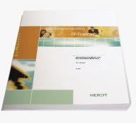 |
| Preis: |
€ 14,50 |
| Erscheinungsdatum: |
November 2005 |
| Umfang: |
221 Seiten |
| Kurzbeschreibung |
Das komplette Grundlagenwissen - kompakt und kompetent!
- Eignen Sie sich Schritt für Schritt elementare Writer-Arbeitstechniken an.
- Gestalten Sie Dokumente optisch ansprechend, z. B. mit Überschriften, Hervorhebungen und Zeichenobjekten,
und drucken Sie sie aus.
- Stellen Sie Informationen übersichtlich in Tabellen und Aufzählungen dar.
- Vereinfachen und beschleunigen Sie viele Arbeiten, z. B. mit AutoTexten, Rechtschreibkorrektur, Silbentrennung,
Kopf- und Fußzeilen sowie Inhalts- und Stichwortverzeichnissen.
- Lernen Sie, wie Sie jederzeit und schnell Ihre Dokumente finden und öffnen können.
|
Bei Herdt bestellen |
Herdt - OpenOffice.org Calc 2.x / StarOffice Calc 8 - Grundlagen
| Autor: |
Konrad Stulle |
|
| Preis: |
€ 14,50 |
| Erscheinungsdatum: |
November 2005 |
| Umfang: |
194 Seiten |
| Kurzbeschreibung |
Das nötige Know-how für optimale Tabellen - klar strukturiert und anschaulich!
- Lernen Sie, wie Sie effektiv Tabellen anfertigen und bearbeiten.
- Eignen Sie sich auf unkomplizierte Weise die nötigen Techniken zur Arbeit mit Formeln und Funktionen und zum
Rechnen mit Datum und Uhrzeit an.
- Tabellendokumente gestalten, drucken und verwalten? Hier steht, wie's geht!
|
Bei Herdt bestellen |
|
|